각 사진의 저작권은 원저작자에게 있습니다. 사진별로 아래 이용 조건이 적용됩니다. CC BY-SA 사진의 크기·형식을 변경한 이미지에도 원본과 같은 라이선스가 적용됩니다.
| 음식 | 저작자 | 라이선스 | 출처·변경 사항 |
|---|---|---|---|
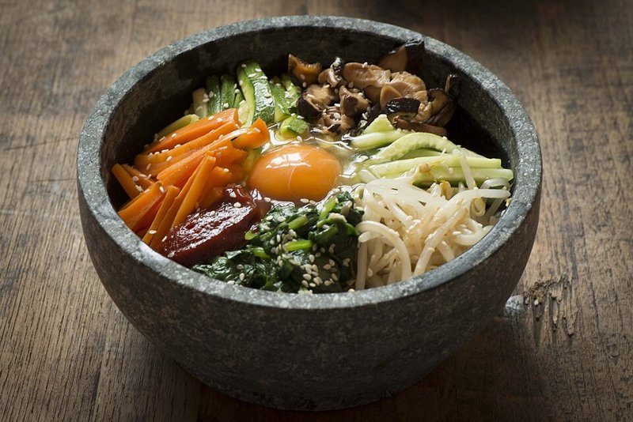 Bibimbap | Sous Chef | CC BY 2.0 | 원본·상세 이용 조건 800 × 600 픽셀 이내 축소 및 JPEG 변환 |
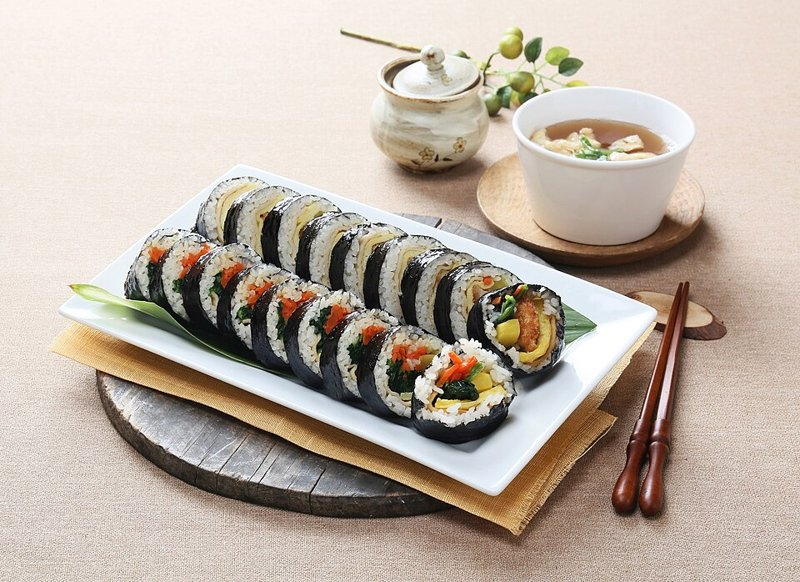 Gimbap | changupn | CC0 | 원본·상세 이용 조건 800 × 600 픽셀 이내 축소 및 JPEG 변환 |
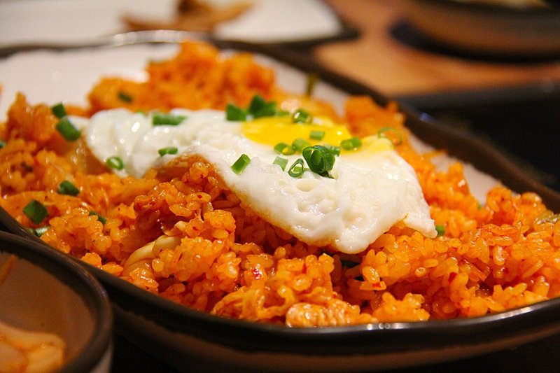 Kimchi fried rice | Sharon Ang | CC0 | 원본·상세 이용 조건 800 × 600 픽셀 이내 축소 및 JPEG 변환 |
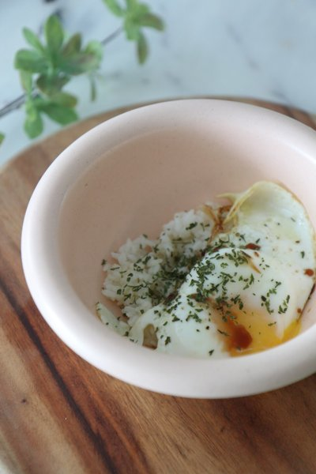 Gyeran-bap | 건강한 레시피 | CC BY 4.0 | 원본·상세 이용 조건 800 × 600 픽셀 이내 축소 및 JPEG 변환 |
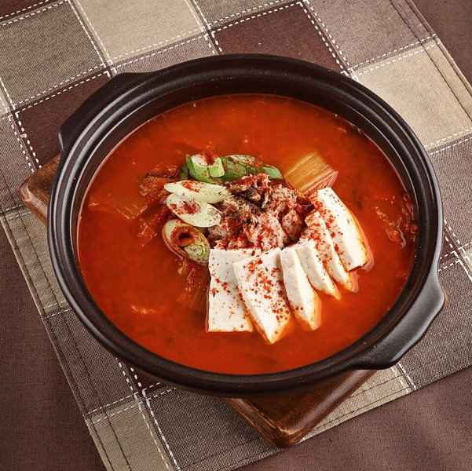 Kimchi jjigae | 한국농수산식품유통공사 | KOGL Type 1 | 원본·상세 이용 조건 800 × 600 픽셀 이내 축소 및 JPEG 변환 |
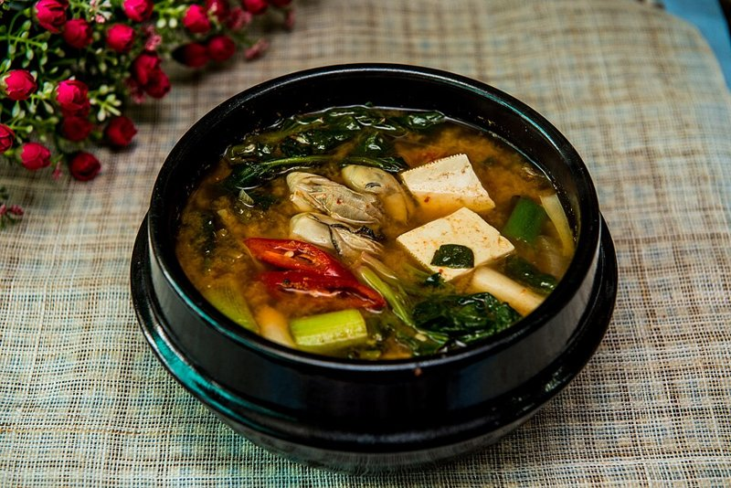 Doenjang jjigae | jyleen21 | CC0 | 원본·상세 이용 조건 800 × 600 픽셀 이내 축소 및 JPEG 변환 |
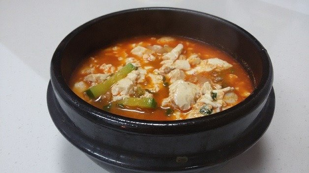 Sundubu jjigae | 행복한 초록개구리 | CC BY 4.0 | 원본·상세 이용 조건 800 × 600 픽셀 이내 축소 및 JPEG 변환 |
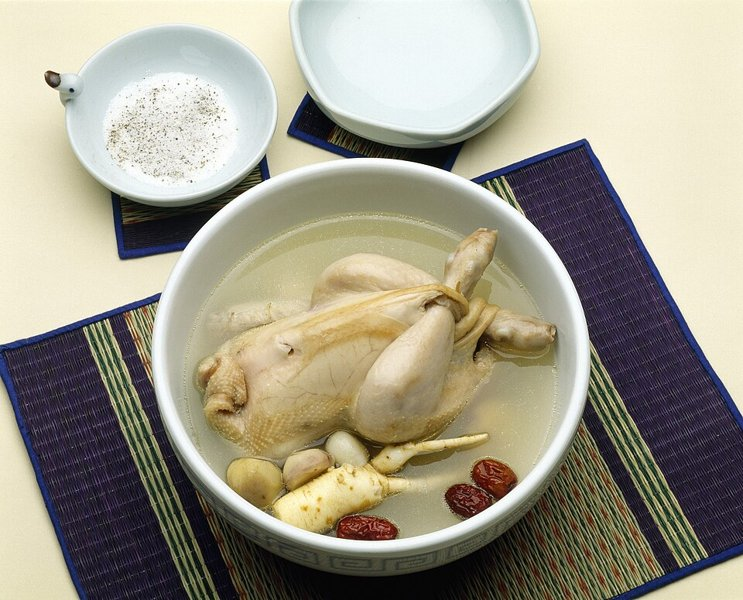 Samgyetang | wizdata | CC0 | 원본·상세 이용 조건 800 × 600 픽셀 이내 축소 및 JPEG 변환 |
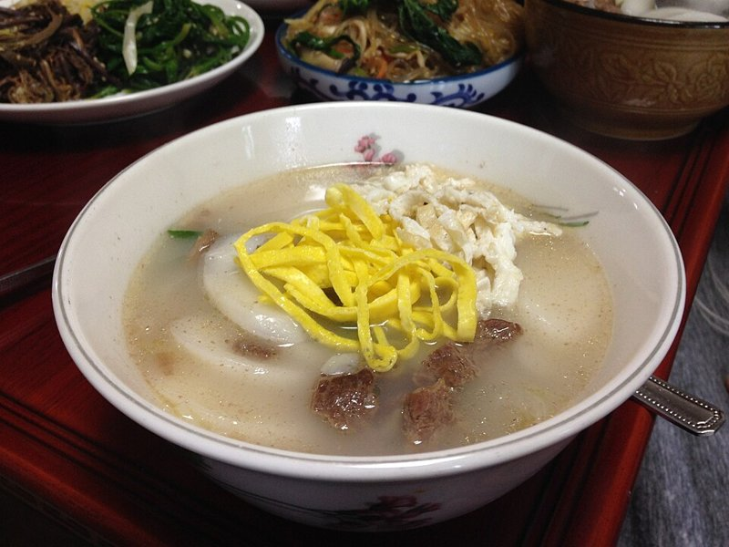 Tteokguk | soscs | CC0 | 원본·상세 이용 조건 800 × 600 픽셀 이내 축소 및 JPEG 변환 |
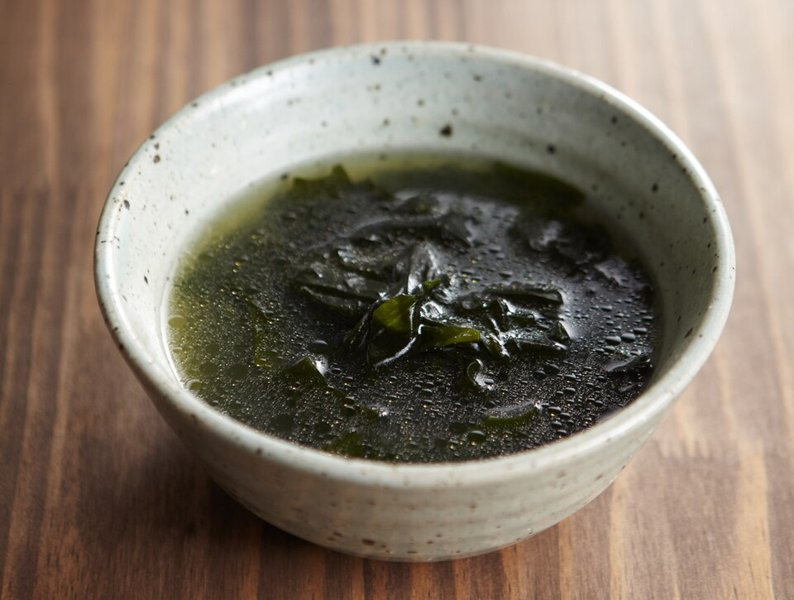 Miyeokguk | 국립국어원 | CC BY-SA 2.0 kr | 원본·상세 이용 조건 800 × 600 픽셀 이내 축소 및 JPEG 변환 |
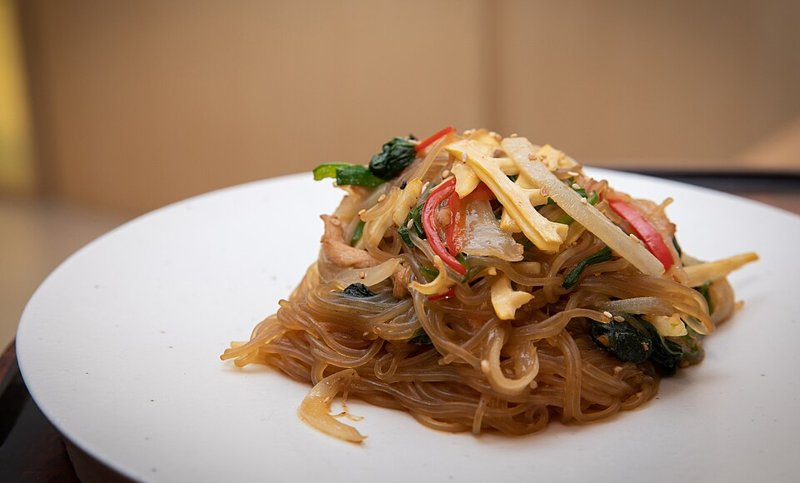 Japchae | korea.net | CC BY-SA 2.0 | 원본·상세 이용 조건 800 × 600 픽셀 이내 축소 및 JPEG 변환 |
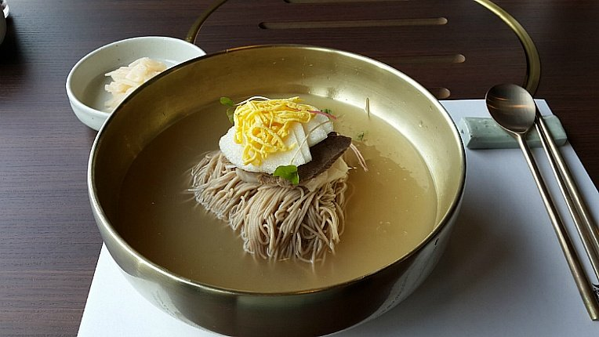 Naengmyeon | wjlee4284 | CC BY 2.5 | 원본·상세 이용 조건 800 × 600 픽셀 이내 축소 및 JPEG 변환 |
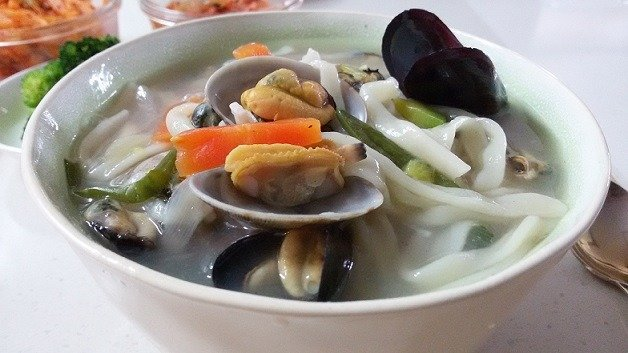 Kalguksu | 행복한 초록개구리 | CC BY 4.0 | 원본·상세 이용 조건 800 × 600 픽셀 이내 축소 및 JPEG 변환 |
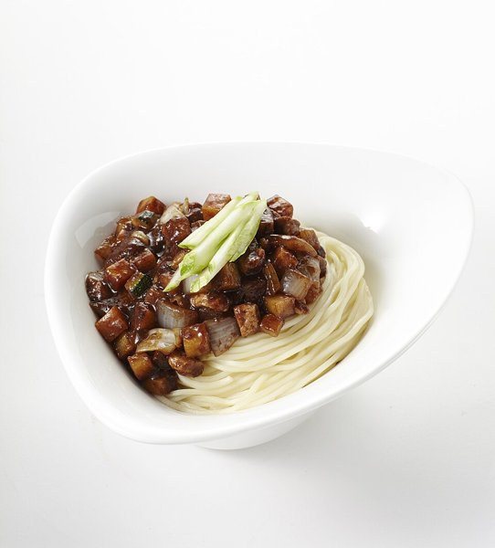 Jajangmyeon | 국립국어원 | CC BY-SA 2.0 kr | 원본·상세 이용 조건 800 × 600 픽셀 이내 축소 및 JPEG 변환 |
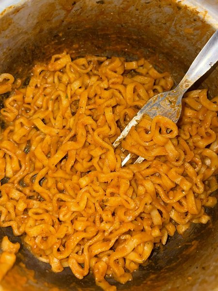 Ramyeon | BrithnyBiong | CC BY 4.0 | 원본·상세 이용 조건 800 × 600 픽셀 이내 축소 및 JPEG 변환 |
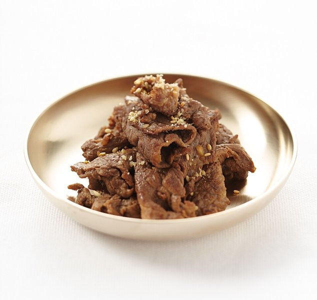 Bulgogi | 국립국어원 | CC BY-SA 2.0 kr | 원본·상세 이용 조건 800 × 600 픽셀 이내 축소 및 JPEG 변환 |
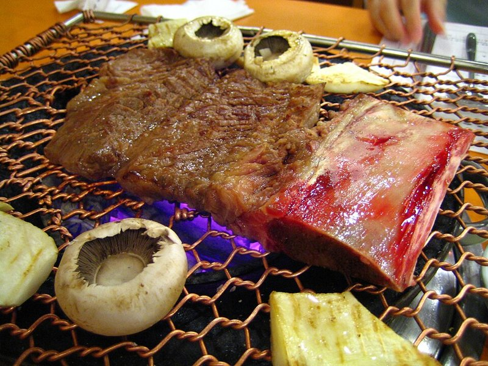 Galbi | ayustety (a flickr user) | CC BY-SA 2.0 | 원본·상세 이용 조건 800 × 600 픽셀 이내 축소 및 JPEG 변환 |
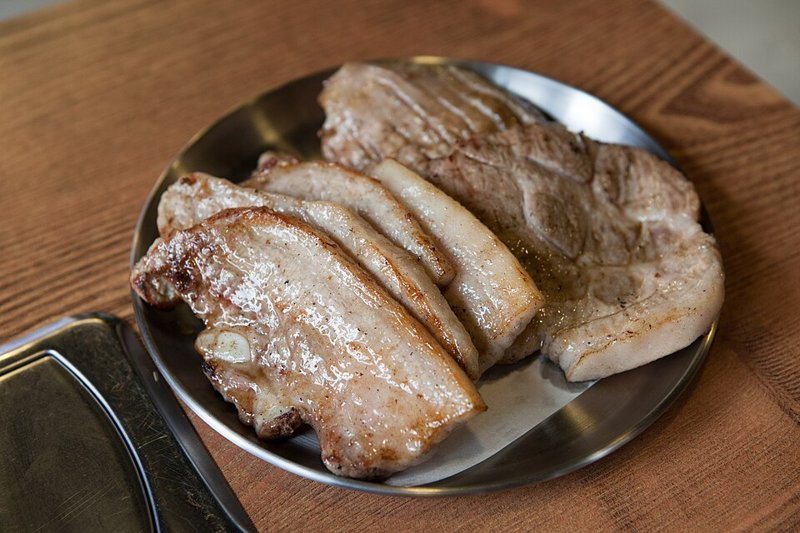 Samgyeopsal | jinsoo jang | CC0 | 원본·상세 이용 조건 800 × 600 픽셀 이내 축소 및 JPEG 변환 |
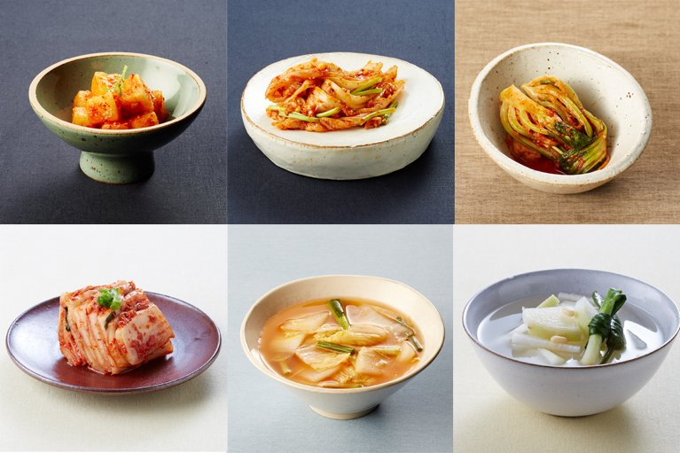 Kimchi | 국립국어원 | CC BY-SA 2.0 kr | 원본·상세 이용 조건 800 × 600 픽셀 이내 축소 및 JPEG 변환 |
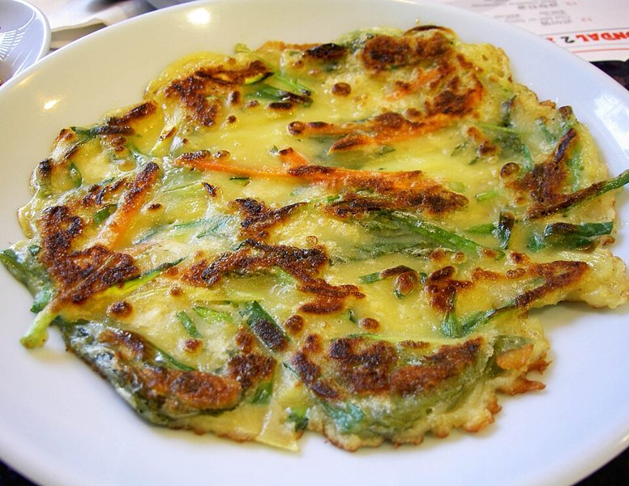 Pajeon | by Tales of an LA Addict (Abby) at Flickr | CC BY-SA 2.0 | 원본·상세 이용 조건 800 × 600 픽셀 이내 축소 및 JPEG 변환 |
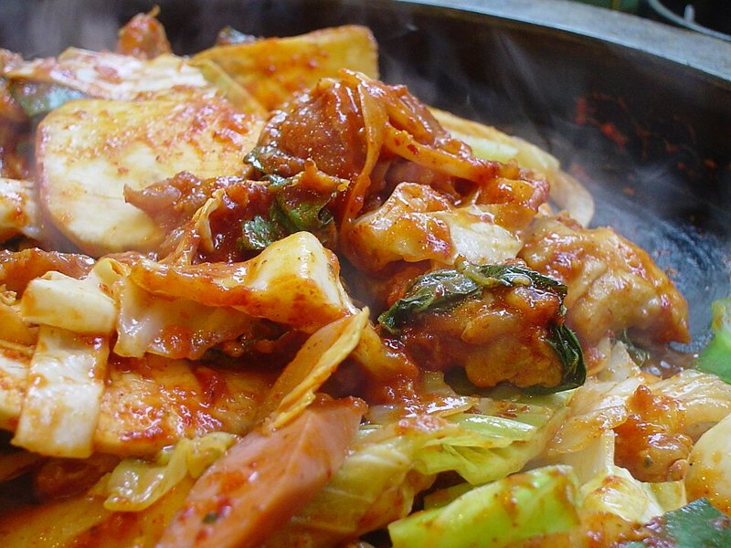 Dakgalbi | by shizu k (shezzz) at Flickr | CC BY-SA 2.0 | 원본·상세 이용 조건 800 × 600 픽셀 이내 축소 및 JPEG 변환 |
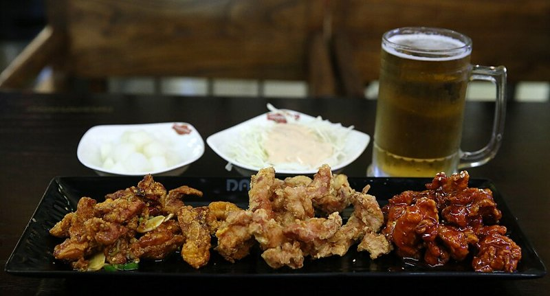 Korean fried chicken | KOREA.NET | CC BY-SA 2.0 | 원본·상세 이용 조건 800 × 600 픽셀 이내 축소 및 JPEG 변환 |
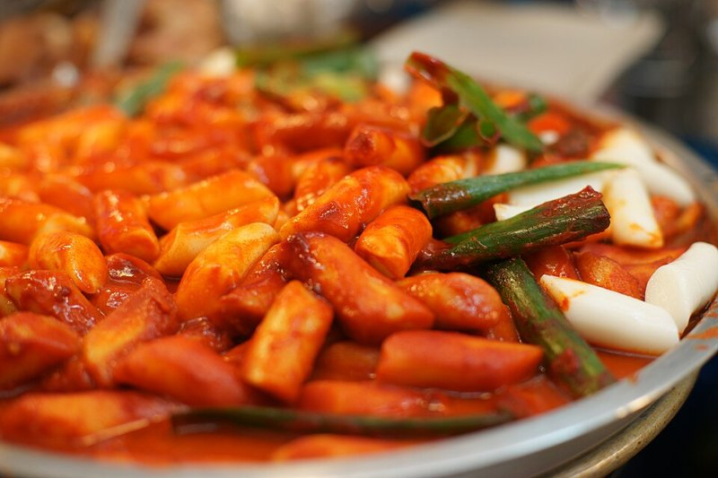 Tteokbokki | Popo le Chien | CC0 | 원본·상세 이용 조건 800 × 600 픽셀 이내 축소 및 JPEG 변환 |
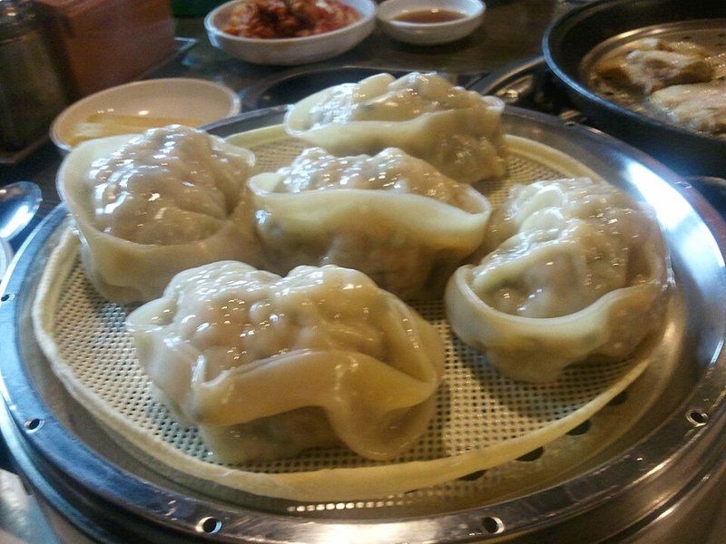 Mandu | Raven9722 | CC0 | 원본·상세 이용 조건 800 × 600 픽셀 이내 축소 및 JPEG 변환 |
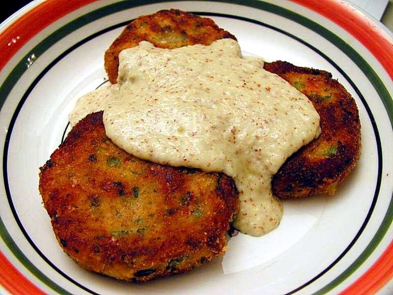 Eomuk | Jon Sullivan | Public domain | 원본·상세 이용 조건 800 × 600 픽셀 이내 축소 및 JPEG 변환 |
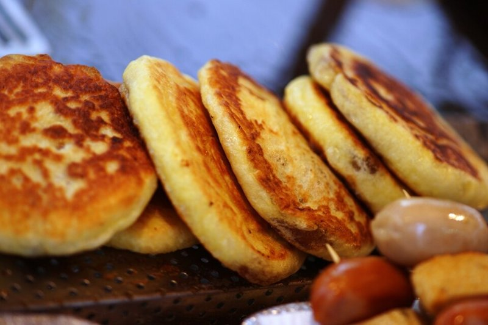 Hotteok | Korea.net / Korean Culture and Information Service | CC BY-SA 2.0 | 원본·상세 이용 조건 800 × 600 픽셀 이내 축소 및 JPEG 변환 |
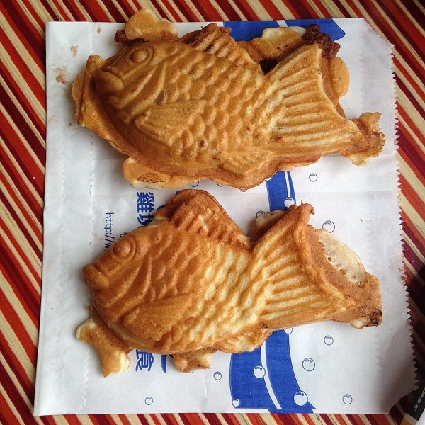 Bungeoppang | Penny Richards | CC BY-SA 4.0 | 원본·상세 이용 조건 800 × 600 픽셀 이내 축소 및 JPEG 변환 |
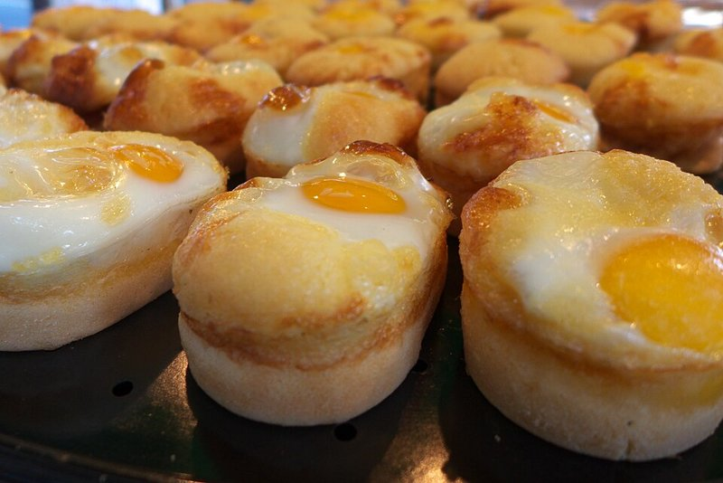 Gyeran-ppang | travel oriented from Seoul, South Korea | CC BY-SA 2.0 | 원본·상세 이용 조건 800 × 600 픽셀 이내 축소 및 JPEG 변환 |
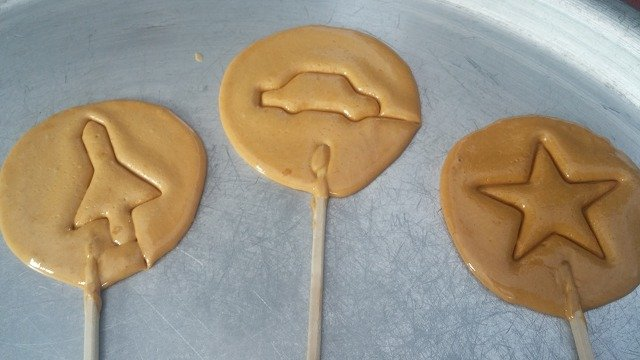 Dalgona | 도자놀자 | CC BY 4.0 | 원본·상세 이용 조건 800 × 600 픽셀 이내 축소 및 JPEG 변환 |
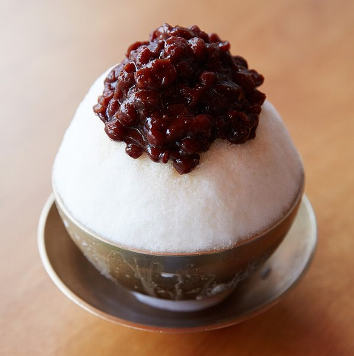 Bingsu | 국립국어원 | CC BY-SA 2.0 kr | 원본·상세 이용 조건 800 × 600 픽셀 이내 축소 및 JPEG 변환 |
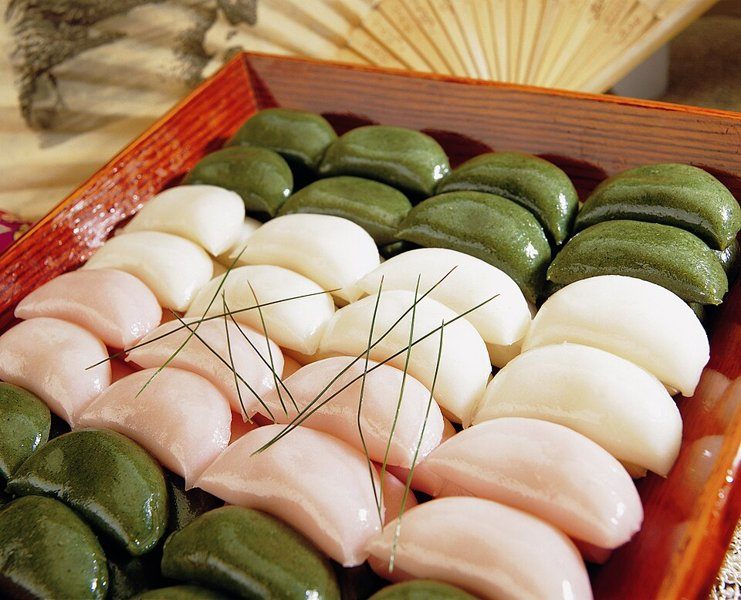 Songpyeon | wizdata | CC0 | 원본·상세 이용 조건 800 × 600 픽셀 이내 축소 및 JPEG 변환 |
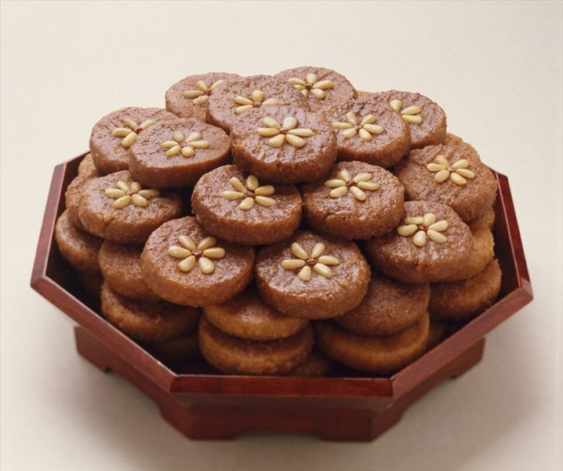 Yakgwa | Korea.net / Korean Culture and Information Service | CC BY-SA 2.0 | 원본·상세 이용 조건 800 × 600 픽셀 이내 축소 및 JPEG 변환 |
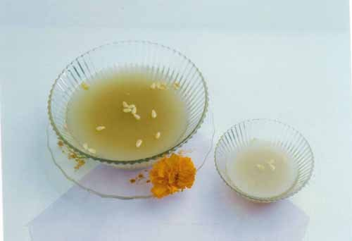 Sikhye | User:Drpepper000 | CC BY-SA 3.0 | 원본·상세 이용 조건 800 × 600 픽셀 이내 축소 및 JPEG 변환 |
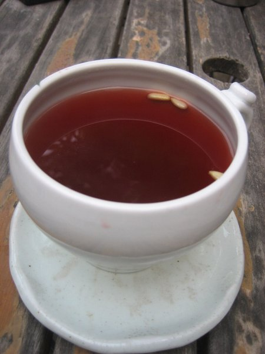 Sujeonggwa | by gliuoo | CC BY-SA 2.0 | 원본·상세 이용 조건 800 × 600 픽셀 이내 축소 및 JPEG 변환 |